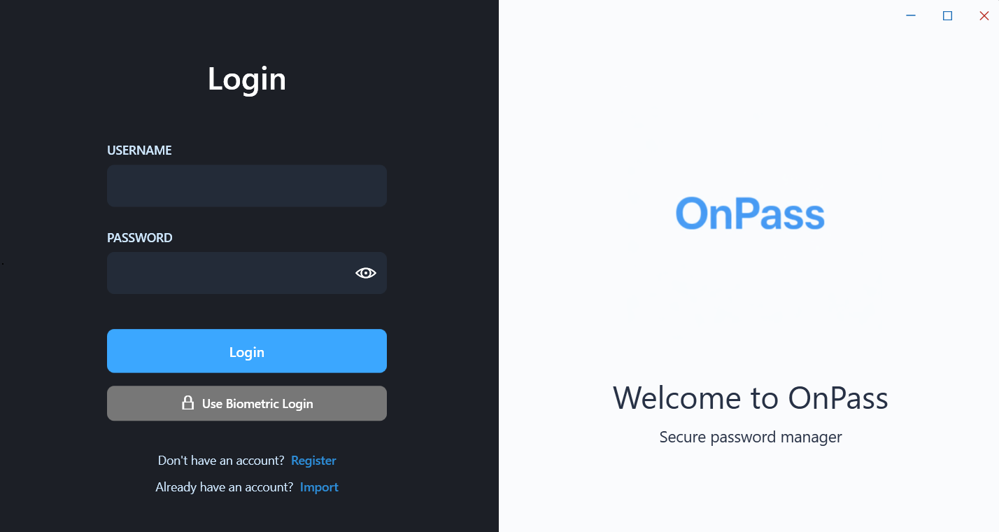

Encrypted local vault
Passwords stay on the desktop app and are stored with AES-based encryption rather than synced to a remote cloud service.
OnPass is a password manager built around local encrypted storage, a Windows desktop vault, and a browser extension that fills credentials on websites without relying on a cloud backend.

The project is designed for both traditional and modern websites, while keeping the core password vault local to the user's machine.
Passwords stay on the desktop app and are stored with AES-based encryption rather than synced to a remote cloud service.
The Windows client supports biometric-assisted login flows alongside a master password for day-to-day use.
The extension classifies login fields, ranks credentials by domain quality, and fills forms on dynamic web pages.
The extension connects to the desktop app over localhost with token validation, so credentials are only exposed to the local browser session.
Set up your master password, sign in to the Windows application, and keep your encrypted vault on your own machine.
Add login records, generate strong passwords, and manage authentication secrets from the desktop client.
The browser extension validates a session token against the desktop app over localhost on ports 9876 and 9877.
When a login field is detected, relevant credentials are identified, ranked, and shown in an inline popup.